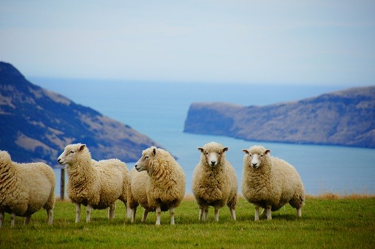

The Land of the Long White Cloud is the most common translation of Aotearoa – the Maori [maw·
ree] name for New Zealand. As legend has it, Kupe (believed to be the first Polynesian to discover
NZ in tribal legend) first thought he was approaching land because of the cloud hovering over it.
His wife, on seeing the apparition, yelled out “He ao! He ao!” (a cloud! a cloud!), which Kupe
would take as inspiration when it came time to name this discovery.

It is one of the most picturesque and photogenic places on earth. A small island nation
of just over 4.5 million people (there are more sheep than people in the country), New Zealand is
made up of two major land masses (North Island and South Island) and a number of smaller islands
including Stewart Island located in the southwestern Pacific Ocean. The two main islands are divided
by a 22km stretch of water called the Cook Strait.
New Zealand is located approximately 930 miles east of Australia. Due to its relative remoteness and being
water locked, New Zealand was one of the
last countries to be found and settled. The country is made up of some of the worlds most spectacular
landscapes, from vast mountain ranges, steaming volcanoes to sweeping coastlines. It is a natural
playground for thrill seekers and adventurers and those who simply want to visit
for the culture and landscapes.
Agriculture is the economic mainstay, but manufacturing and tourism are important. Visitors are
drawn to the glacier-carved mountains, lakes, beaches and thermal springs. Because of the islands'
geographical isolation, much of the flora and fauna is unique to the country.
New Zealand plays an active role in Pacific affairs, and has special constitutional ties with the Pacific
territories of
Niue, the Cook Islands and Tokelau.